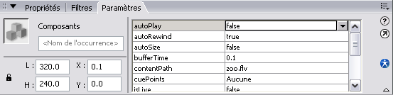

Dans ce tutoriel, je vais vous expliquer comment créer une vidéo de type FLV et comment la lire via une page HTML. Comme vous le savez, le FLV est un format vidéo de type streaming (qui se lit en parallèle au téléchargement). Le FLV est la propriété d’Adobe, et est largement utilisé sur les sites comme Youtube, Vimeo ou Dailymotion. :)
Pour lire des fichiers .flv, il faut passer par une animation Flash (.swf).
Mais je n’ai pas Flash moi, et je n’ai pas envie de l’acheter ! Que faire ?
Ne vous inquiétez pas, Flash n’est pas nécessaire. Il existe des convertisseurs gratuits produisant du FLV et des animations de lecture toutes faites. :)
Si vous avez Flash 8, vous avez également un logiciel appelé FLV Encoder. Je vous expliquerai comment vous en servir si vous ne souhaitez pas passer par Flash pour faire votre vidéo et votre animation de lecture.
Au fait, pourquoi le FLV et pas du MOV ou du WMV ?
J’ai dit que pour utiliser le FLV, il fallait une animation SWF permettant de lire la vidéo comme avec un lecteur normal (avec les options « lire », « pause », « volume », etc.). Le SWF est lisible avec Flash Player, qui est disponible pour Windows, Mac et Linux. Bref, partout, au contraire des autres formats vidéo. Et puis, Flash Player est disponible d’origine dans Internet Explorer, les utilisateurs n’auront pas besoin de télécharger un lecteur comme QuickTime. :)
Et au fait, je n’ai jamais vu ce genre de truc. C’est vraiment utilisé ?
Oui oui, c’est utilisé. C’est la technique qu’emploient les sites d’hébergement de vidéos comme Google Video, Dailymotion, ou encore YouTube. ;)
Flash 8 et Flash CS3 permettent de créer très facilement des lecteurs de fichiers *.flv. Un outil de création est à disposition. Nous allons donc voir comment nous en servir. :)
Création de l’animation de lecture
Commencez par ouvrir Flash 8. Une fois que c’est fait, dirigez-vous vers le menu Fichier puis cliquez sur Importer puis sur Importer dans la scène.
La fenêtre Sélectionner le fichier vidéo apparaît. Cliquez sur Suivant. Dans Déploiement, sélectionnez la première option (une indication claire, nette et précise apparaît dans le cadre à droite ;) ).
Cliquez sur Suivant.
Dans Codage, définissez le codage qui sera employé. C’est un peu à vous de voir ce que vous voulez en faire. Moi, je vais mettre en qualité élevée pour Flash Player 8. Vous pouvez mettre en qualité moyenne, afin d’alléger un peu le fichier.
Cliquez sur Suivant.
Maintenant, dans la partie Réhabillage, nous allons définir l’apparence du contrôleur de lecture qui sera associé à la lecture du fichier FLV. Il y a bien assez de types différents, faites votre choix. Moi, je garde celui par défaut. :D
Cliquez derechef sur Suivant.
Flash vous propose une petite récapitulation des opérations avant de les effectuer. Cliquez sur Terminer si tout vous semble bon. :) Flash vous impose d’enregistrer votre fichier *.fla. Faites-le, et donnez-lui un nom définitif.
Voilà, Flash commence l’encodage de la vidéo :
Et hop, vous vous retrouvez avec une interface de lecture dans votre animation *.fla.
Quelques réglages supplémentaires
Cette interface de lecture est en réalité un composant Flash, qui s’appelle FLVPlayback. Comme tous les composants, il est préparamétré, et il vous est bien sûr possible de modifier ces paramètres.
Pour y accéder, cliquez sur le composant FLV. Ensuite, ouvrez le panneau Propriétés (Ctrl + F3) et cliquez sur l’onglet Paramètres.
Là-bas, vous avez accès à tous les paramètres du composant :

Ainsi, vous pouvez modifier l’autoPlay (démarrage automatique), le contentPath (si vous voulez indiquer un autre chemin pour la vidéo)...
Mise en place de l’animation
Enregistrez votre fichier *.fla, et publiez-le en SWF (Ctrl + Entrée).
Vous disposez normalement de 3 fichiers :
le *.swf de l’animation (même nom que le *.fla) ;
le fichier vidéo *.flv ;
le fichier du contrôleur de lecture *.swf.
Pour placer l’animation sur votre page, utilisez ce script, sans embed :
En fait, Flash Video Encoder est un petit convertisseur, livré avec Macromedia Flash Professional 8.
Commencez par ouvrir le petit logiciel. Il se trouve théoriquement ici : Démarrer > Programmes > Macromedia > Macromedia Flash 8 Video Encoder. Si vous ne le trouvez pas dans le menu Démarrer, utilisez l’Explorateur : C:\Program Files\Macromedia\Flash 8 Video Encoder.
Vous y êtes ? Parfait. :)
Cliquez sur le bouton Ajouter pour ajouter une vidéo à convertir en FLV. Flash Video Encoder permet de convertir plusieurs vidéos à la suite. C’est pour cela qu’il est construit comme un logiciel de gravure, avec une liste des fichiers à graver, sauf qu’ici, ce sont des fichiers à convertir. ^^
Il s’agit maintenant de définir les paramètres de la vidéo. Par exemple, dans la colonne Paramètres, il est marqué Flash 8 Qualité moyenne. Moi, je préfère une bonne qualité. :) Pour modifier ça, cliquez sur le nom du fichier à convertir, puis sur le bouton Paramètres qui se dégrise.
Dans la liste déroulante, choisissez une autre qualité d’encodage. Vous pouvez aussi jeter un coup d’œil aux Paramètres avancés. Mais il vaut mieux ne pas trop chipoter là-dedans, le résultat est bon sans rien changer. ^^ Évidemment, si vous souhaitez redimensionner ou recadrer la vidéo, allez-y, ça ne changera rien à l’encodage. ;) Flash Video Encoder est plutôt performant, d’autant plus qu’il est normalement destiné aux professionnels de la vidéo.
Quand tout est bon, cliquez sur Activer la file d’attente. Flash Video Encoder va alors commencer la conversion.
Et puis c’est fini. Vous obtenez un beau fichier *.flv prêt à être utilisé. :)
Pour convertir facilement vos vidéos en *.flv, on va utiliser FFmpeg. FFmpeg est un ensemble de logiciels libres dédiés au traitement des vidéos. FFmpeg est disponible pour Windows, Mac OS et Linux. C’est malheureusement un logiciel en ligne de commande, mais WinFF est là ! WinFF est une interface graphique pour FFmpeg, qui est elle aussi disponible pour les différents systèmes d’exploitation !
Installation
Windows
Pour les utilisateurs de Windows, rendez-vous ici pour télécharger la version de WinFF pour Windows. L’installateur installera FFmpeg et WinFF et sera utilisable directement.
Linux
Pour les utilisateurs de Linux, installez WinFF via votre gestionnaire de paquets. Vous pouvez aussi télécharger les paquets directement, sur la page de téléchargement. Installer WinFF installera également FFmpeg s’il n’est pas déjà installé.
Utilisation
WinFF ressemble à beaucoup de convertisseurs : ajoutez les vidéos que vous souhaitez convertir, réglez quelques options, cliquez sur Convertir, et le tour est joué.
Saisissez Convertir enWebsites, et ensuite saisissez le paramètre par défaut de votre choix.
Flash Video (flv) for Web use Fullscreen : la taille de la vidéo obtenue est de 320×240 pixels (proportion 4:3).
Flash Video (flv) for Web use Widescreen : la taille de la vidéo obtenue est de 320×180 pixels (proportion 16:9).
Autres réglages
Il est fort probable que ces deux réglages prédéfinis ne vous satisfassent pas (taille trop petite par exemple). Dans ce cas, il y a deux solutions : soit afficher des options supplémentaires, c’est rapide, soit créer un nouveau préréglage. C’est un rien plus long, mais vous pourrez le sauvegarder.
Options supplémentaires
Cliquez simplement sur le bouton Options pour afficher (ou masquer) les options supplémentaires. Vous pouvez alors régler rapidement le débit vidéo, la taille de la vidéo, ou les proportions (ratio d’aspect). Des options de recadrage peuvent être définies, et des paramètres additionnels peuvent être ajoutés (si vous vous y connaissez bien). Ces paramètres sont ceux utilisés par FFmpeg, reportez-vous à la documentation de FFmpeg pour plus d’informations :
Créer ou modifier un préréglage
Pour accéder au panneau de gestion des préréglages, allez dans Editer > Préréglages. Sélectionnez la catégorie Websites dans la liste de gauche. Vous pouvez alors éditer un des deux préréglages Flash Video.
Pour en créer un nouveau, modifiez simplement le Nom du préréglage, ainsi que son Titre complet.
Cliquez sur Ajouter / Modifier pour valider les modifications.
La ligne de commande du préréglage
Comme je l’ai dit plus haut, il s’agit des paramètres utilisés par FFmpeg pour convertir la vidéo. Inspirez-vous d’une ligne de commande existante pour créer la vôtre. Les paramètres de FFmpeg peuvent être consultés dans la documentation en anglais. Voici quelques paramètres utiles (tous les paramètres ne doivent pas être spécifiés en fait) :
Param
Description
-ar
Taux d’échantillonnage du son
-an
Pas de son (-ar est donc inutile)
-ab
Débit audio en bits/seconde
-f
Format de sortie
-s
Taille (Largeur x Hauteur)
-ss
Temps à partir duquel on commence à convertir : -ss 00:00:30 (à la 30e seconde)
Si vous tournez sous Windows, vous pouvez télécharger directement FFmpeg ici. C’est un fichier *.7z que vous pouvez ouvrir avec WinZip, WinRAR ou encore 7-Zip (gratuit et open source).
Du côté de Linux, FFmpeg est installable via le gestionnaire de paquets. Vous pouvez aussi utiliser directement la commande sudo apt-get install ffmpeg pour l’installer, par exemple.
La procédure d’utilisation est bien sûr la même quel que soit l’OS utilisé. Ouvrez votre console, et entrez :
Neolao FLV Player, ou de son vrai nom FLV Player, est une animation SWF toute faite qui vous permet de lire une vidéo FLV sur une page Web. FLV Player est développé par le français Neolao.
Maxi, version étendue du lecteur, avec plus d’options ;
Multi, variante de la version Maxi qui permet de lire plusieurs fichiers FLV.
Fichiers
Téléchargez le fichier *.swf qui correspond à la version que vous désirez utiliser, et uploadez-le sur votre site Web. Je vais utiliser le fichier player_flv.swf dans mon exemple ci-dessous.
Lecture de base
Pour lire une vidéo FLV, utilisez ce code HTML tout simple :
Spécifiez le chemin vers votrefichierflv.flv dans le paramètre flv. Définissez aussi le chemin vers le fichier SWF (ici, player_flv.swf) dans l’attribut data de l’élément <object> et dans l’élément <param name="movie" />
Lecture de plusieurs fichiers
Pour lire plusieurs fichiers, vous devez utiliser la version Multi du player, c’est-à-dire le fichier player_flv.swf. Dans la variable flv, il vous suffit de mettre à la suite les différentes vidéos à lire en les séparant par le caractère pipe (|), comme le monde ce code :
Comme dans les images données ci-dessus, il est possible de modifier les couleurs du lecteur et de le paramétrer, comme par exemple, de définir le temps de buffer (mémoire tampon), l’image par défaut, la taille de la playlist… Bref, il y a un certain nombre d’options.
Sur le site de l’auteur, pour chaque type de lecteur (Normal, Maxi, Multi…) un générateur de code est disponible (dans un lien du menu). Pour la version Maxi, il se trouve ici. Le générateur est assez simple à utiliser, il y a une prévisualisation du lecteur. Il vous suffit de copier-coller le code HTML proposé, et d’un peu l’adapter.
Je suis sous Linux, et ni SUPER ni Riva ne fonctionnent sous mon OS. Que faire ?
Reportez-vous à ma réponse précédente. FFmpeg est disponible pour Linux. Voyez cette partie pour plus d’informations.
Comment convertir en étant sous Mac OS ?
Il existe un logiciel semblable à SUPER pour Mac exploitant ffmpeg. Il s’appelle ffmpegX. Mais vous pouvez passer directement par FFmpeg via la console. Reportez-vous à la partie Convertir : en console, avec FFmpeg. :)
Neolao FLV Player
La vidéo se lit correctement sous Internet Explorer mais pas sous les autres navigateurs (ou inversement).
C’est que l’URL du fichier player.swf n’est pas correctement définie dans la balise <object>. Il faut veiller à ce que l’URL définie dans l’attribut data de la balise <object> soit la même que celle définie dans la balise <param name="movie" /> :
La vidéo se lit normalement, mais le curseur de lecture reste bloqué au début ! Que faire ?
Soit vous avez encodé votre vidéo avec une vieille version de SUPER, soit c’est un *.flv que vous avez récupéré (Youtube, par exemple) et qui est mal encodé. En réalité, il n’est pas mal encodé : il est encodé en FLV 1.0. Pour bénéficier du curseur de lecture, il faut passer votre vidéo au format FLV 1.1. Pour cela, c’est très simple, il suffit d’injecter des métadonnées…
Dans le lecteur créé avec Flash 8, est-il possible de remplacer le contentPath (c’est-à-dire le lien qui pointe vers mon contenu video.flv) par un lien qui pointe vers une playlist contenue dans un fichier *.xml comme indiqué pour la procédure avec la FLVPlayer ?
Non, ce n’est pas possible. Enfin si, c’est possible, mais il faut monter tout vous-même, à coups d’ActionScript, et ça, ça dépasse mon domaine de compétences. ;)
Peut-on intégrer le FLVPlayer directement dans une animation Flash ?
Non, il vaut mieux le faire soi-même en ActionScript. Je vous recommande la lecture de ce tutoriel pour y parvenir.
Pour injecter des métadonnées dans notre *.flv, nous allons utiliser le programme répondant au nom charmant de FLV MetaData Injector, un petit logiciel gratuit.
Vous devez télécharger FLVMDI 2.94 et FLVMDIGUI 1.05. Décompressez les 2 archives dans le même dossier !
Une fois que c’est fait, ouvrez flvmdigui.exe.
Dans le champ Input FLV file, recherchez le fichier *.flv que vous avez créé avec SUPER. Cochez les options, sauf Create XML file et Extract MetaData as XML(s), no injection.
Dès que c’est fait, cliquez sur Run FLVMDI, et le tour est joué. :)
 Ne vous inquiétez pas, Flash n’est pas nécessaire. Il existe des convertisseurs gratuits produisant du FLV et des animations de lecture toutes faites. :)
Ne vous inquiétez pas, Flash n’est pas nécessaire. Il existe des convertisseurs gratuits produisant du FLV et des animations de lecture toutes faites. :)


{kind=link}